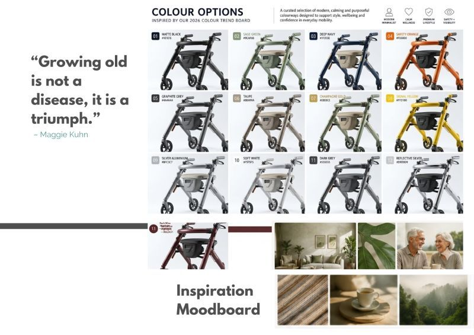

SmartWalker
An intelligent rollator that monitors posture, detects obstacles, analyses gait and calls for help if the user falls. Built to be affordable as well as clever.

- Role
- User research · CAD · Electronics · FEA · BOM costing
- Tools
- SOLIDWORKS · ESP32-S3 · Arduino / C++ · KeyShot
- Recognition
- James Dyson Award 2026 entry
- Deliverable
- Working prototype and a 12-section technical report
Not something to lean on. Something intelligent.
Conventional mobility aids are often visually clinical, uncomfortable and technologically outdated, which contributes to reduced confidence, social stigma and limited independence for elderly users.
The SmartWalker started as a simple question: what if a mobility aid actually worked for the person using it? Everything after that, from the mechanism to the firmware to the cost, was an attempt to answer it.
I built the working prototype from scratch: user research, mechanical CAD, electronics, sensor fusion, FEA validation, a commercial bill of materials and a twelve-section technical report.
The firmware had to grow up.
The intelligence graduated from a benchtop test on an Arduino Uno to a production-ready ESP32-S3. The 8-bit Uno proved the core logic, but sensor fusion across several I2C devices pushed it to its limit.
The 32-bit dual-core chip changed that. High-frequency IMU polling moved to one core while emergency braking and buzzer logic stayed on the other, which gave real multithreading and far more headroom for filtering.
- 01Obstacle awarenessLiDAR and ultrasonic detection packaged into the frame without adding bulk.
- 02Posture and fallsIMU-based posture monitoring, with a fall state that triggers the alert.
- 03Gait analysisAI-assisted gait reading, so the walker can tell more than moving or stopped.
- 04Emergency alertingBluetooth and 4G escalation by SMS when the user cannot respond.
- 05FeedbackHaptic and audio cues that warn before the hazard rather than after it.
- 06WheelsHybrid regenerative wheels that assist braking and walking over uneven ground.
Designed for more than one income.
One thing I felt strongly about from the start: this should not be a product only wealthy people can access. Mobility issues do not discriminate by income.
So the design split into two tiers. The premium tier keeps the hybrid regenerative wheels that assist braking and walking over uneven ground. The affordable tier strips back to the core safety technology, which means fall detection, obstacle awareness and emergency alerts, so the people who need it most can actually get it. I think it is wrong to design assistive technology for one part of society and ignore everyone else.
That decision is why the £252.99 target BOM matters. Cost was a design constraint from the first sketch, not a number bolted on at the end.
The result, and what it cost to get there.
The walker supports users up to 130 kg, stays below 6.5 kg in total, and runs for eight hours per battery cycle. The electronics and sensor modules were packaged to give real-time posture monitoring without a weight penalty.
This is the project that pulled every skill I had into one object: research, CAD, firmware, FEA and commercial costing. It is also the one that reminded me why I got into engineering. It has since been submitted to the 2026 James Dyson Award.

